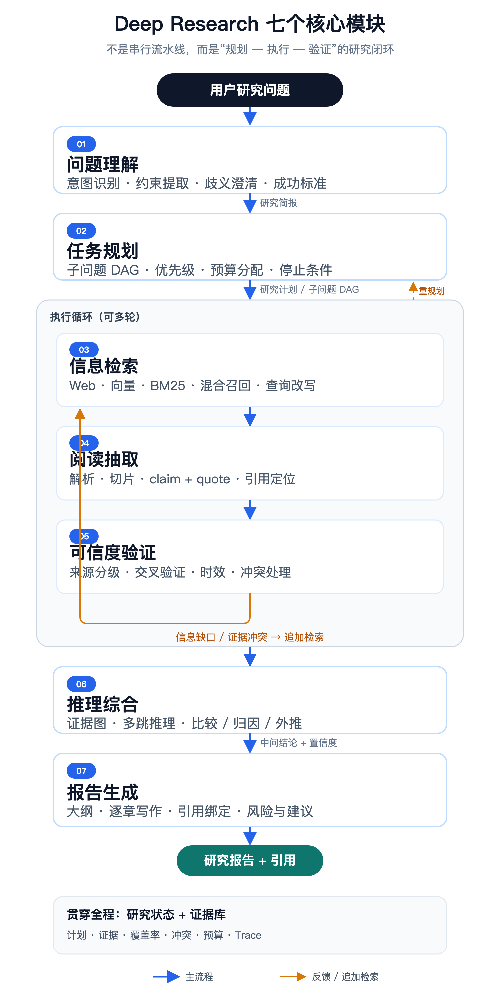

为什么需要 Deep Research，以及它的 7 个核心模块
适合读者：有 AI、大模型或后端基础的工程师
你大概见过这样的演示：
输入一个问题，AI 自动搜索十几篇网页，几分钟后吐出一份几千字的报告。排版漂亮，结构完整，看起来非常专业。
但只要多问一句——“这个数字哪来的？”“这两个来源为什么互相矛盾？”“结论的证据链在哪？”——它往往就露馅了。
这不是 Deep Research，这只是“搜索 + 总结”。
真正的研究型 Agent，差别不在输出长度，而在它有没有一套研究状态：知不知道自己查过什么、还缺什么、哪些结论有争议、下一步该查哪里。
本文从工程视角，把 Deep Research 拆开讲清楚：它由哪些模块组成、每个模块怎么实现、难点在哪、怎么落地、怎么评估。
三个推力同时到位了。
第一，模型能力跨过门槛。
长上下文、结构化输出、工具调用、多步指令遵循，这几项能力同时成熟，才让“让模型自己决定下一步查什么”从 demo 变成可工程化的系统。
第二，成本降下来了。
一次研究任务可能包含几十次搜索、上百次网页读取、多轮模型调用。靠模型分层——小模型做抽取和分类，大模型做规划和综合——才把成本压到可运营区间。
第三，需求从“问答”升级成“调研”。
企业真正要的往往不是一句答案，而是一份包含背景、证据、对比、风险和建议的材料。传统 RAG 擅长回答，但不擅长主动研究。
三者的关系可以用一张表说清：
| 能力 | 解决的问题 | 典型输出 |
|---|---|---|
| 普通搜索 | 哪里有信息 | 链接列表 |
| RAG | 如何用已有资料回答 | 一段答案 |
| Deep Research | 如何完成一项研究 | 带引用的报告 |
一句话：搜索解决“哪里有”，RAG 解决“怎么喂”，Deep Research 解决“怎么研究”。
满足以下任意几条，就值得用 Deep Research：
反例也很明确：查天气、改代码、查一条公司报销标准——一次工具调用或一次 RAG 就够，用 Deep Research 是过度设计。
判断标准：这个问题是否需要“多步获取 + 判断 + 综合”才能回答。
先给一个工程视角的定义：
Deep Research 是一种以大模型为控制器、以外部工具为信息通道、以证据为中心的研究型 Agent。它接收复杂或开放的研究问题，自主完成问题理解、任务规划、多轮检索、文档阅读、证据抽取、交叉验证、推理综合和报告生成，并在明确的预算约束下输出可追溯的研究结论。
四个关键词：
1. 大模型是控制器。
模型不只做最后写作，而是参与决策：下一步查什么、读哪篇、要不要追加检索、什么时候停。
2. 证据为中心。
中间产物是结构化的证据集合，报告是从证据上“长”出来的，不是凭空生成的。
3. 多轮且动态。
检索不是一次性的，计划也不是一成不变的。系统会根据覆盖率、冲突和缺口调整策略。
4. 预算约束。
研究是有限资源下的最优停止问题。没有预算约束，Agent 会无限检索。
差别是本质性的：
| 搜索 + 总结 | Deep Research |
|---|---|
| 线性流程：搜 → 拼 → 总结 | 循环：计划 → 执行 → 评估 → 调整 |
| 用户原问题直接搜 | 拆解、改写、扩展、多角度检索 |
| 处理摘要片段 | 抽取结构化证据，保留原文与出处 |
| 不判断可信度 | 来源分级、交叉验证、时效判断 |
| 不知道缺什么 | 显式维护覆盖率与开放问题 |
| 输出一段文字 | 输出报告 + 引用 + 风险 + 建议 |
核心差异只有一句话：有没有显式的研究状态。
例子一：行业趋势分析
“分析未来三年 AI 推理芯片行业的竞争格局和技术趋势。”
合格的系统会先澄清范围：全球还是中国、是否包含边缘侧、读者是投资人还是研发。然后拆成市场规模、主要玩家、技术路线、供应链、政策、下游需求等子问题。市场规模数字在不同机构之间差异很大，必须并列呈现口径和假设。
例子二：开源框架选型
“调研某开源框架是否适合企业核心交易系统。”
难点不在“介绍框架”，而在约束匹配：许可证是否允许闭源商用、社区活跃度、版本兼容策略、可观测性、权限审计、迁移成本、历史漏洞。
最终输出应该是一张评分矩阵 + 风险清单 + PoC 建议，而不是一篇介绍文章。
例子三：模型选型
“比较多个 AI 模型在客服场景中的优劣。”
最容易犯的错是拿公开榜单当结论。合格的系统会先明确语言、并发、延迟上限、单次成本、数据是否出境，再区分“公开基准表现”和“业务场景表现”，并说明哪些结论有证据、哪些只是推断。
三个例子的共同点：问题本身包含大量隐含约束，答案质量取决于是否把约束显式化。
一个完整的 Deep Research 系统，通常按数据流分成七层。先看一张总图：

图 1：七个模块不是串行流水线，而是“规划—执行—验证”的闭环。蓝色实线为主流程，橙色线为反馈与追加检索。
下面按数据流顺序逐个拆。
这是整个系统的需求文档，后续所有模块都依赖它。
要做四件事：
一份结构化的研究简报至少包含：
关键策略：只对影响结论走向的约束追问，其余采用默认值并写进 assumptions。
每次都追问会毁掉体验；不追问又容易答偏。折中点是：把假设摆到明面上，让用户有机会纠正。
坑：过度追问、约束互相冲突、把“企业级”这类隐含要求漏掉。后者需要领域知识库，把“企业级”展开成高可用、审计、权限、SLA 等检查项。
Planner 把研究目标转换成可执行的任务图，通常是 DAG。
常见拆解维度：
一个好子问题的标准：可检索、可验证、粒度适中、有优先级。
计划建议用显式结构表示，而不是藏在 prompt 里：
{
"goal": "评估 X 是否适合企业级落地",
"sub_questions": [{
"id": "q1",
"question": "许可证是否允许闭源商用？",
"priority": "P0",
"depends_on": [],
"success_criteria": "找到 LICENSE 文件",
"budget": {"searches": 3, "reads": 5}
}],
"stop_conditions": [
"P0 子问题均有至少两个独立来源",
"剩余预算低于 15%",
"连续两轮无新增有效证据"
]
}什么时候重规划：
工程上优先做局部修补，而不是全局重写。全局重写容易把已经完成的工作丢掉。
Planner 的真正作用，是把“探索”变成“有方向的探索”。没有它，Agent 容易原地打转、过早收敛、预算失控。它还负责定义“什么算完成”——没有停止条件，Agent 要么停太早，要么停不下来。
坑：拆解质量不稳定、粒度过细导致调用爆炸、子问题形成循环依赖、重规划丢失上下文。解法是领域模板 + 结构化校验 + 计划持久化。
四条通道各有用处：
实践中最稳的是混合检索：
RRF 的公式很简单：
RRF_score(d) = Σ 1 / (k + rank_i(d))其中 k 通常取 60 左右，rank_i(d) 是文档在第 i 路召回中的排名。
查询改写是提升召回的关键：
| 方法 | 作用 | 适用场景 |
|---|---|---|
| 同义扩展 | 加同义词、缩写、英文对照 | 术语不统一 |
| 查询分解 | 复合问题拆成单跳查询 | 多实体比较 |
| Step-back | 先问更抽象的背景问题 | 缺领域知识 |
| HyDE | 先生成假设答案再检索 | 措辞差异大 |
| 时间限定 | 加年份、季度、latest | 时效性要求高 |
| 站点限定 | 限定官网、财报、法规库 | 需要一手来源 |
| 否定查询 | 加 limitation、failure | 找反面证据 |
多轮检索的常见策略：
坑：查询漂移、结果同质化、付费墙、时效性差。要保留原始问题作为锚点，维护查询历史，按域名和内容指纹去重。
这是最“脏活累活”的模块，也是决定证据质量的关键。
典型流水线：
一个证据条目至少包含：
{
"evidence_id": "ev_00123",
"claim": "X 在 100M 向量下 P99 延迟约 45ms",
"quote": "在 100M 向量、200 QPS 的压测中……",
"source_url": "https://example.com/x",
"published_at": "2026-03-12",
"retrieved_at": "2026-11-16T10:32:00Z",
"span": {"start": 1024, "end": 1108},
"source_type": "primary",
"confidence": 0.86
}四个设计要点：
引用要贯穿全链路：抓取记录 URL → 解析记录正文位置 → 切片记录偏移 → 抽取记录 quote 偏移 → 报告绑定 evidence_id。任何一环丢失位置，引用都会退化成“大概来自某个网页”。
坑：JS 渲染、PDF 表格、反爬、多语言、转载去重，以及最危险的抽取幻觉——模型总结出原文没有的数字。必须要求 quote 逐字出现在原文中，否则丢弃。
这一步是 Deep Research 和普通搜索摘要的分水岭。
来源可信度建议多维度打分，而不是一个黑盒分数：
交叉验证的关键是独立性。 两个站点互相转载，不算两个证据。判断独立性要看：域名是否不同、内容是否高度相似、是否引用同一个原始来源、发布机构是否关联。
一个实用流程：
冲突不一定是坏事，它往往是有价值的信息。 处理方式：
幻觉的四个来源：
对应四道控制：
坑：可信度分数过度自信、SEO 垃圾内容、多个站点循环引用造成“虚假共识”、逐条验证成本高。解法是分层抽样验证 + 规则与模型结合。
Deep Research 的推理通常是多跳的。例如：
X 的许可证是 Apache 2.0
→ Apache 2.0 允许闭源商用
→ 但 X 的企业功能采用单独商业许可
→ 所以“整体可闭源商用”需要限定范围直接让模型做 Chain-of-Thought 会碰到四个问题：推理不可审计、长链条漂移、无法中途插检索、难以复用和评估。
工程上更常用结构化推理：
共同点是：把推理过程外化成可检查的中间产物，而不是依赖隐式思维链。
结论建议用“论点—论据—限定”三段式：
{
"claim": "X 适合作为企业级 RAG 的向量检索层",
"support": ["ev_001", "ev_007"],
"counter": ["ev_021"],
"conditions": [
"向量规模在 100M 以内",
"团队具备 Kubernetes 运维能力",
"可接受社区版缺少部分企业功能"
],
"confidence": "medium-high"
}这样写的好处：结论可追溯、反面证据不会被藏起来、限定条件明确、置信度能传给报告。
摘要回答“发生了什么”，洞察回答“这意味着什么”。 从摘要到洞察，通常要走完归纳、比较、归因、外推、反事实、行动含义六步。
一个实用检查：报告里至少要有一个非显而易见的结论，以及支撑它的证据链。如果通篇都是“X 很重要”“市场在增长”，那只是摘要，不是研究。
坑：证据太多导致注意力稀释、推理漂移、过度推断、相关当因果。解法是证据筛选与聚类、结构化模板、强制标注置信度。
推荐“先大纲、后章节、再校验”：
引用规则：
一份合格报告通常包含：执行摘要、背景与范围、分析正文、风险与不确定性、建议、附录。
读者适配不是改语气，而是重排信息优先级：
| 读者 | 报告重点 |
|---|---|
| 高管 / 投资人 | 结论、风险、决策含义，短，结论前置 |
| 工程团队 | 实现差异、约束、迁移成本、PoC 清单 |
| 法务 / 合规 | 条款、判例、法域，精确引用，保守表述 |
| 产品 / 市场 | 用户需求、竞品、定位、机会点 |
坑：引用漂移、章节重复、模型倾向写长、多章节语气不一致、把推测写成事实。解法是生成时绑定 evidence_id、全局大纲、字数预算、最终一致性检查。
下一篇，我们先把它和 RAG 的边界划清，再把这七个模块串成一条完整的执行链路：13 步分别做什么、会在哪里翻车，以及一套可落地的架构与伪代码。